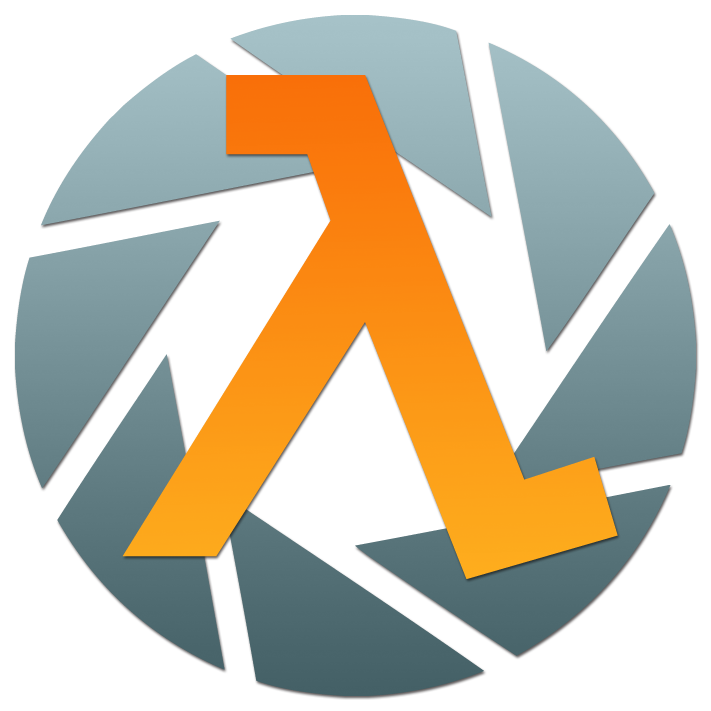

Главная

Эта статья, шаблон, галерея или раздел находится в середине расширения или реконструкции.Мы будем рады Вашей помощи в создании или реконструкции. Тем не менее, не делайте серьезных изменений до проведения консультаций с сообществом, поскольку соответствующие редакторы, вероятно, создали руководящие принципы для построения страницы.
Важное
Вселенная Half-Life, также известная как Вселенная Half-Life и Portal — научно-фантастическая вселенная, созданная Valve Corporation в 1998 году с выпуском Half-Life на ПК-платформе. Она проходит через четыре связанных сюжетных линии, вытекающих из игр: Half-Life, Half-Life 2, Portal и Portal 2.
С момента релиза Half-Life претерпела множество изменений, расширений и продолжений, большинство из которых находятся в той же вселенной. Большинство из них были разработаны Valve, однако, три дополнения — Half-Life: Opposing Force, Half-Life: Blue Shift и Half-Life: Decay — были разработаны Gearbox Software. В 2005 году Electronic Arts взяла на себя издание игр Half-Life.
Помимо Windows, игры серии выходили на многих консолях, таких как PlayStation 2, PlayStation 3 и Xbox 360, а также Mac. Начатая на движке GoldSrc, модификации движка Quake, сейчас серия построена на движке Source.
Обзор
Игры серии Half-Life представляют собой шутеры от первого лица, разбавленные решением несложных головоломок. Игры являются линейными и, в основном, основанными на скриптах. В подсерии Portal игроку предстоит проходить испытания, используя возможности портальной пушки.
Способ подачи сюжета оригинален. В отличие от многих других игр, сюжет раскрывается перед игроком не полностью, большую часть сюжета игроку приходится додумывать самому, основываясь на окружающей обстановке.
Вселенная Half-Life и Portal
- Разработчики: Valve Corporation, Gearbox Software;
- Издатели: Electronic Arts, Sierra Studios, Steam;
- Серии: Half-Life, Portal;
- Даты: Half-Life - 19 ноября 1998; Half-Life: Opposing Force - 1 ноября 1999; Half-Life: Blue Shift - 12 июня 2001; Half-Life: Decay - 14 ноября 2001; Half-Life 2 - 16 ноября 2004; Half-Life 2: Episode One - 1 июня 2006; Half-Life 2: Episode Two, Portal - 10 октября 2007; Portal 2 - 19 апреля 2011; Half-Life: Alyx - 23 марта 2020 года;
- Жанры: Научная фантастика, шутер от первого лица, головоломка;
- Режимы: Одиночный и кооперативный;
- Платформы: Windows, Mac OS X, PlayStation 2, PlayStation 3, Xbox и Xbox 360;
- Движки: GoldSrc, Source, Source 2;
- Сценаристы: Мэттью Армстронг, Стивен Бал, Чет Фализжек, Роб Хейронимус, Брайан Хесс, Кристи Джунио, Марк Лэйдлоу, Дэвид Мерт, Джей Пинкертон, Рэнди Питчфорд, Эрик Уолпоу, Шон Ванаман;
- Композиторы: Келли Бейли, Крис Дженсен, Майк Мораски.
Главные герои
Гордон Фримен — главный герой в серии, физик-теоретик, доктор философии (PhD), окончил Массачусетский технологический институт. Работал в Чёрной Мезе и после инцидента пытался выбраться из лаборатории, но в итоге выжил и закрыл межпространственный разлом между Землёй и Зеном, уничтожив Нихиланта. Затем попал в стазис, так как, по мнению G-Man’а, был очень важен для человечества. Через 20 лет, выйдя из стазиса, оказался в Сити 17. Он встретился со старыми друзьями и начал воевать с Альянсом на стороне Сопротивления. Гордон становится подобием мессии для людей, которые возлагают на него миссию освободить Землю от порабощения Альянса.
Адриан Шепард — главный герой аддона Half-Life: Opposing Force. Шепард является капралом спецподразделения HECU, которое прибыло в Чёрную Мезу с целью её полной зачистки от пришельцев, а также для уничтожения всего персонала как свидетелей случившегося. Но вскоре он отрывается от своей группы и понимает, что должен выбираться из комплекса своими силами. Однако, вскоре Шепард сталкивается с Расой Х и уничтожает Геночервя, затем попадает в руки G-Man’а, который помещает Шепарда в стазис.
Барни Калхун — главный герой аддона Half-Life: Blue Shift и один из ключевых персонажей в серии, начиная с Half-Life 2. До катастрофы Барни работал обыкновенным охранником, и после инцидента он вместе с группой учёных пытался живым выбраться из комплекса. Во второй части работает на Сопротивление под прикрытием, притворяясь сотрудником Гражданской Обороны. Должен Гордону Фримену пиво. Имеет фобию, связанную с кошками, приобретённую впоследствии испытаний доктором Айзеком Кляйнером с порталом.
Колетт Грин и Джина Кросс — героини третьего аддона Half-Life: Decay. Грин и Кросс были коллегами Фримена в Чёрной Мезе, а после инцидента удалённо помогали ему в его приключении. Дальнейшая судьба неизвестна. Возможно, они обе погибли.
Челл — главная героиня игр Portal и Portal 2, подопытная в Aperture Science.
Аликс Вэнс — главная героиня Half-Life: Alyx. Ключевой персонаж Half-Life 2 и эпизодов, напарница Гордона Фримена, дочь Илая и Азиан Вэнсов.
Хронология событий
1940-е
1943
- Кейв Джонсон получает награду "Shower Curtain Salesman".
1944
- Кейв Джонсон покупает соляную шахту в Верхнем Мичигане и переделывает её в Aperture Science Innovators.
1944 или 1945
- Рождение Ричарда Келлера.
1945
- Конец Второй Мировой войны.
1947
- Aperture Science получает награду "Best New Science Company" от Американского Университета Науки и Бизнеса.
1949
- Aperture Science оказывается на втором месте в списке прикладных научных компаний по версии журнала "Mechanical Engineering World Journal".
1950-е
1952
- Aperture Science начинает тестировать отталкивающий гель.
- Aperture Science является призёром награды Министерства Обороны США "Подрядчик года".
1953
- Aperture Science конструирует Насосную Станцию "Альфа", а также, по крайней мере, две первых камеры Тестовой шахты 09.
1954
- Aperture Science снова получает награду "Подрядчик года" от Министерства Обороны США.
1955
- Aperture Science получает награду "Spirit of Idaho National Potato Board" за продвижение картофелеводства.
1956
- Администрация Эйзенхауэра подписывает контракт с Aperture Science на производство душевых занавесок для всех ветвей вооружённых сил США, за исключением военно-морского флота.
- Насосная станция "Альфа", которая качает отталкивающий гель, начинает активную работу.
1957
- Aperture Science уже конструирует камеру 26 теста 09.
1958
- Aperture Science конструирует камеры 27 и 28 теста 09.
1960-е
1961
- Первый в истории полёт человека в космос.
- Тестовая шахта 09 "Zulu Bunsen" осуждается и опечатывается.
1968
- Aperture Science участвует в слушаниях в Сенате США по делу о "пропавших астронавтах".
- Aperture Science становится банкротом.
Между 1968 и 1978
- Рождение Колетт Грин.
1969
- Аполлон 11 достигает луны.
1970-е
1971
- Aperture Science снова открывает тестовую шахту 09.
- Aperture строит насосную станцию "Бета".
- Aperture Science начинает тестирование проталкивающего геля.
Между 1972 и 1982
- Рождение Гордона Фримена
1972
- Aperture Science конструирует, как минимум, тестовые камеры 1 и 2 испытательного комплекса проталкивающего геля.
1973
- Самая ранняя известная дата, когда Aperture Science использует электронную доску объявлений.
Между 1974 и 1984
- Рождение Джины Кросс.
1975
- Возможно, рождение Челл.
1976
- Aperture Science конструирует, как минимум, пятую тестовую камеру испытательного комплекса проталкивающего геля.
- Кейв Джонсон получает ответ в письме "Humans Enrichment & Testing Initiative, Resourse Acquisitious", описывающее четыре типа испытуемых и их поведение.
Между 1977 и 1987
- Рождение Адриана Шепарда
1978
- Aperture Science конструирует лифт, ведущий из испытательного комплекса проталкивающего геля.
1980-е
1981
- Aperture Science конструирует испытательный комплекс преобразующего геля.
- Кейв Джонсон тратит 70 миллионов долларов на доставку лунного камня и выплавку из него преобразующего геля.
- Из-за работы с преобразующим гелем Кейв Джонсон смертельно заболевает.
1982
- Aperture Science строит насосную станцию "Гамма".
- Aperture Science начинает тестирование преобразующего геля.
- Кейв Джонсон называет Кэролайн своим преемником.
- По окончанию испытаний, разум Кэролайн должен быть перенесён в компьютер.
1983
- Издаётся календарь "Девушки из Aperture Science".
1986
- Тестовый комплекс преобразующего геля улучшен дополнительной стеной.
- Aperture Science начинает разработку GLaDOS.
- Активированная GLaDOS V.1 пытается убить всех сотрудников Aperture Science.
1990-е
Конец 90-х
- Во время посещения Инсбрукского университета Фримен наблюдает за телепортационным экспериментом. После этого он заражается идеей применения технологии телепортации.
1997
- Версия GLaDOS - 3.11.
1998
- Aperture Science выпускает несколько тестовых элементов, таких как экскурсионная воронка, термический луч подавленности, куб преломления подавленности, панель веры и другие.
1999
- Гордон Фримен заканчивает MIT.
2000-е
200-
- Неизвестный год, в котором происходит инцидент в Чёрной Мезе.
- GLaDOS активируется на мероприятии "Приведи свою дочку на работу!". Она берёт контроль над комплексом, блокирует все двери и убивает сотрудников центра развития при помощи нейротоксина, которые отказались участвовать в её испытаниях.
- Записка Шепарда, в которой он рассказывает о странном мужчине в костюме, появившемся на базе, о слухах, что он является правительственным агентом и том, что он был бы рад поработать в правительственной разведке.
- Записка Шепарда, в которой он опять рассказывает о человеке из правительства. Он считает, что он одет скорее не как агент, а как юрист. Он также подмечает, что тот постоянно наблюдает за ним во время тренировок.
- Записка Шепарда, в которой он рассказывает о том, что его и других солдат собираются отправить на специальную тренировку с симуляцией настоящего боя.
- Барни Калхаун получает письмо от Л.М. о переназначении своей смены на 15 мая.
- Колетт Грин получает письмо от Л.М. о замене образца EP-0021 на GG-3883.
- Записка Шепарда, в которой он рассказывает, что по лагерю ходят слухи о тренировке с симуляцией настоящего боя, но никто не может сказать чего-то точного. Он слышал название "Исследовательский комплекс Чёрная Меза", поговаривают, что там на самом деле проводят секретные испытания.
- Второй день тренировки Барни Калхауна.
- Уолтер Беннет был проинструктирован Джиной Кросс.
- Колетт Грин проинструктирована Айзеком Кляйнером.
- Шепард мистическим образом попадает в список участников особых тренировок. Также это момент, когда G-Man посещает военную базу "Сантьяго".
- Шепард пишет ещё одну записку, в которой рассказывается, что слух подтвердился. Тренировка будет проходить в комплексе "Чёрная Меза". Всё, что известно об этом месте, это то, что там проводятся какие-то исследования. Шепард начинает сильно сомневаться насчёт этой тренировки.
- Джина Кросс проинструктирована Ричардом Келлером об использовании прототипа пятой модели костюма HEV.
- Системные сбои в Чёрной Мезе.
- Начинается поездка Барни Калхауна на монорельсе.
- Начинается поездка Гордона Фримена на монорельсе. В это же время Барни Калхаун прибывает на место своей работы.
- Момент каскадного резонанса. Эксперимент с образцом GG-3883 выходит из-под контроля, и на Землю начинают телепортироваться существа из Зена.
- Фримен, Калхаун, Кросс и Грин сражаются с существами из Зена и солдатами HECU.
- Адриан Шепард вместе с отрядом военных на конвертоплане атакован скатом Зена.
- Успешный запуск ракеты Гордоном Фрименом.
- В это время в секторе C должны были начаться соревнования по десятиборью. Этого не произошло из-за инцидента.
- Рано утром Джина Кросс и Колетт Грин совершают гармонический рефлюкс. Их дальнейшая судьба, а также судьба Келлера неизвестны.
- Барни успешно покидает Чёрную Мезу вместе с Розенбергом, Симмонсом и Уолтером Беннетом.
- Гордон Фримен прорывается к комплексу Лямбда.
- Адриан Шепард приходит в сознание и пытается эвакуироваться, но G-Man мешает ему.
- Фримен побеждает Нихиланта и освобождает вортигонтов. Затем он соглашается работать на G-Man'а, попадая в стазис.
- Чёрная Меза уничтожается атомной бомбой. Шепард оказывается в стазисе.
- GLaDOS заканчивает соперничество с Чёрной Мезой, вследствие уничтожения последней.
- Колетт Грин должна была провести тур по связям с общественностью. Это не произошло из-за инцидента.
- Отис Лори должен был быть проинструктирован Миллером. Этого не случилось из-за инцидента.
- Смена Барни должна была закончиться. Это произошло раньше из-за инцидента.
После мая 200-
- Гордон Фримен находится в стазисе.
- По всей Земле происходят портальные штормы. Существа из Зена продолжают беспорядочно телепортироваться. Правительства и ООН организовывают убежища в крупных городах.
- Aperture Science закрывается вместе с сотрудниками, оказавшимися в ловушке.
- Альянс нападает на Землю. Происходит семичасовая война. Уоллес Брин, бывший администратор Чёрной Мезы, от имени землян признаёт поражение. Начинается оккупация Земли Альянсом.
- События Portal. GLaDOS пробуждает Челл. Челл становится испытуемой и проходит все тесты. GLaDOS пытается убить Челл, но та спасается и побеждает ИИ. В результате, Челл попадает в руки распорядителя вечеринки, а GLaDOS остаётся в живых.
- Земля уже захвачена Альянсом.
- События Portal 2: Lab Rat. Даг Раттман всячески помогает Челл, хотя та этого даже не замечает.
- Айзек Кляйнер и Илай Вэнс строят телепорт. Проводятся его испытания, в результате которых на глазах Барни и Айзека погибает кошка.
Между 2010 и 2024
- Силы Альянса схватили Илая Вэнса, но Аликс Вэнс смогла его освободить.
- Аликс Вэнс освобождает из плена Вортигонтов, сила которых использовалась для поддержки энергии летающей тюрьмы
- Аликс Вэнс уничтожает летающую тюрьму Альянса, впервые встречается с G-man'ом.
- По решению G-man'а, Аликс спасает своего отца в будущем.
Между 2014 и 2028
- Аликс Вэнс ездит на багги по побережью около базы Сопротивления Берег.
- Рейвенхольм обстрелян снарядами с хедкрабами. В городе остаётся лишь один выживший.
Между 2015 и 2029
- Гордон Фримен выходит из стазиса.
- Айзек Кляйнер и Илай Вэнс проводят испытания телепортации на живых людях.
- Силы Альянса нападают на Восточную Чёрную Мезу.
- Взрыв в Нова Проспект.
- Начало Восстания в Сити 17.
- Гибель Уоллеса Брина.
- Уничтожение Сити 17.
- Открытие суперпортала на месте Цитадели.
- Сражение за Белую Рощу.
- Запуск ракеты Сопротивления с последующим закрытием портала.
- Гибель Илая Вэнса, но благодаря Аликс Вэнс из прошлого, он выживает.
- Попадание Аликс Вэнс в стазис из-за спасения отца в прошлом.
События перед Portal 2
- После частичного уничтожения GLaDOS комплекс приходит в упадок.
- Челл находится в стазисе.
- В какой-то момент (или моменты) Челл просыпается для прохождения обязательной разминки.
Portal 2
- Уитли пробуждает Челл.
- Ранее уничтоженная GLaDOS вновь включается.
- Главный модуль GLaDOS заменяется на Уитли, и тот получает контроль над комплексом, скидывая Челл и GLaDOS в шахту лифта.
- Aperture Science оказывается на грани уничтожения.
- Уитли побеждён GLaDOS и Челл.
- GLaDOS отпускает Челл.
- При помощи двух роботов, ATLAS'а и P-body, GLaDOS открывает хранилище с людьми.
- GLaDOS "атакована" птицей.
- GLaDOS начинает уход за птенцами.